会員登録・ログイン
アプリのダウンロード方法4ステップ
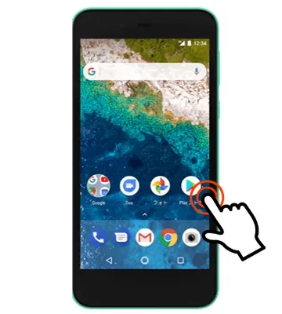
STEP1Androidの方は→playストア iphoneの方は→Appストアをタッチ
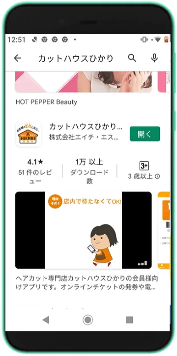
STEP2『カットハウスひかり』と検索
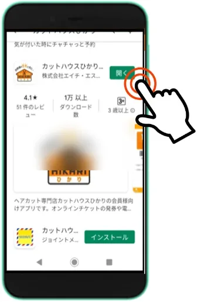
STEP3Androidの方はインストール→開く iphoneの方は入手→開く
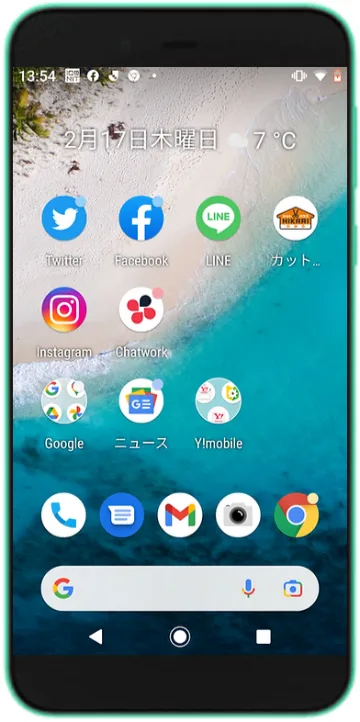
STEP4アプリのダウンロード完了
ID・パスワードについて2ステップ
会員登録・ログイン時に必要になります。
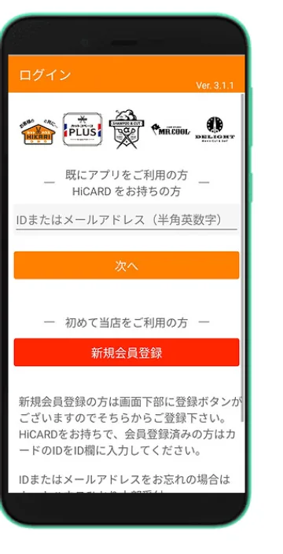
STEP1はじめに『ID』を入力
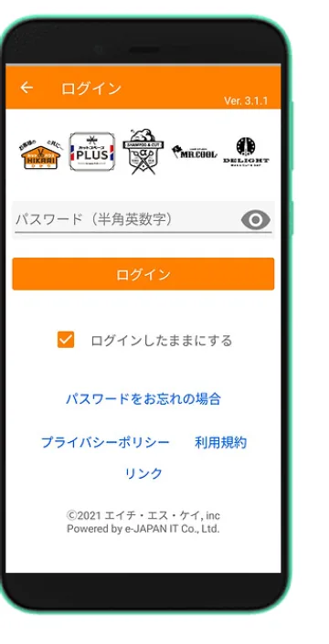
STEP2次にパスワードを入力してログイン
会員登録方法8ステップ
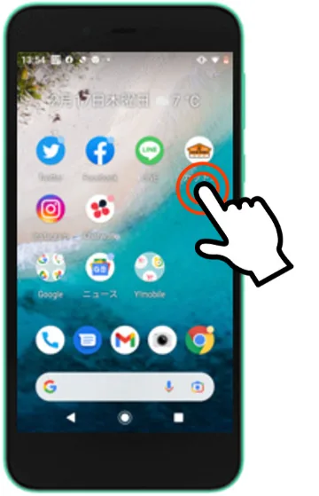
STEP1『カットハウスひかりアプリ』をタッチ
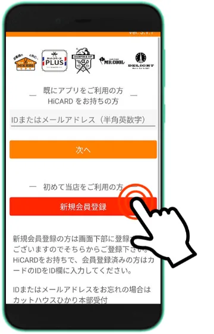
STEP2『新規会員登録』をタッチ
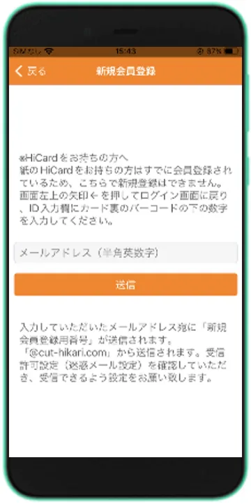
STEP3メールアドレスを入れて『送信』をタッチ入力したメールアドレスに新規会員登録用番号が送信されます。 @cut-hikari.comより送信）（受信許可設定(迷惑メール設定)を確認して頂き、受信できるよう設定をお願いいたします）
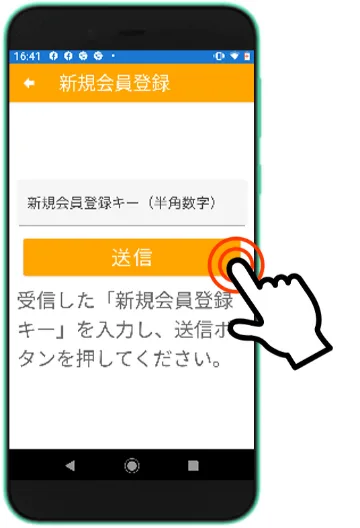
STEP4受信したメールに記載されている『新規会員登録用番号』を入力→送信
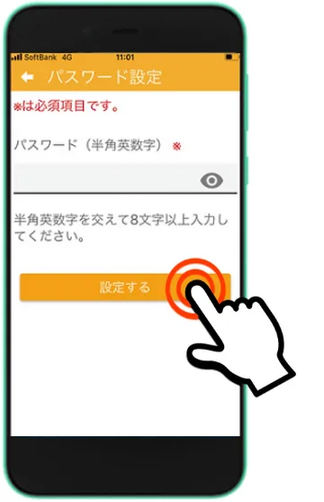
STEP5パスワード半角英数字が混在した8文字以上を入力→『設定する』をタッチ
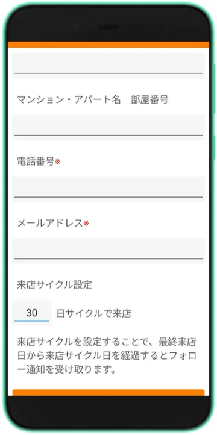
STEP6登録に必要な情報を入力→『登録する』をタッチ
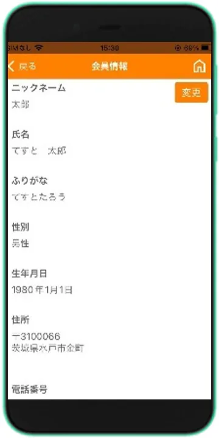
STEP7登録内容を確認し、 OKの場合には『戻る』をタッチ
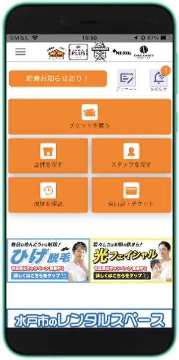
STEP8トップページに戻る / メールアドレスはIDとしてお使いいただけます。パスワードは、お忘れにならないよう、保存をお願いします。
ログイン方法（HiCARDをお持ちの方）7ステップ
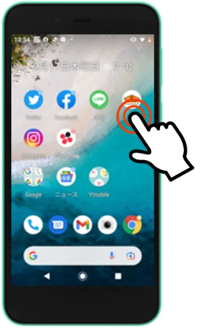
STEP1『カットハウスひかりアプリ』をタッチ
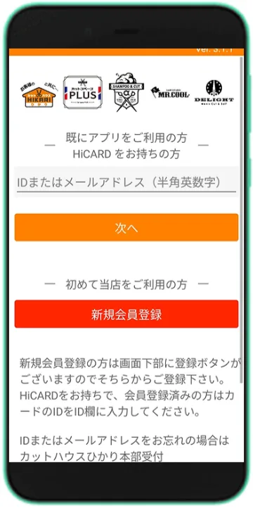
STEP2Hiカードをお持ちの方は、IDを入力（カード裏のバーコードの下の数字0から始まる場合は０を除いて）→『次へ』をタッチ＊IDをお忘れの場合は店舗にお越しいただくか、本部までお電話でお問い合わせください。 050-1720-5983 ㈱エイチ・エス・ケイ
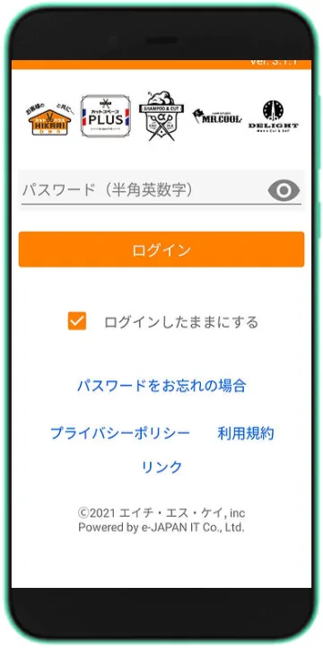
STEP3Hiカード会員でパスワードをご存知の方はパスワード（初期設定のままの方は８ケタの数字）を入力→『ログイン』をタッチ店舗で仮パスワードを発行された方は発行されたパスワードを入力→『ログイン』をタッチ
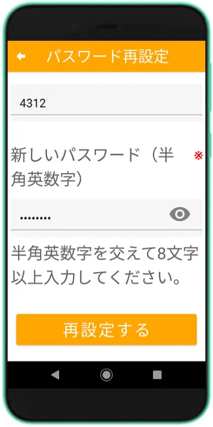
STEP4新しいパスワードの設定半角英数字を交えて 8文字以上の新しいパスワードを入力安心してお使いいただく為、英数字まじりのパスワードをご登録ください
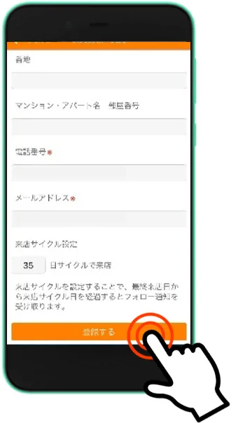
STEP5登録に必要な情報を入力→『登録する』をタッチ＊すでに会員情報が登録されている場合には内容をご確認の上、変更が必要な場合にはご変更ください。
- STEP6
登録内容を確認し、 OKの場合には『戻る』をタッチ
- STEP7
トップページに戻る
HiCARDからアプリに移行したい方へ
- アプリの便利機能が使える
- アプリ会員限定のポイントが使える
- カードいらずで、財布の中身がすっきり
移行は7ステップ
お店で
- 1スタッフに声をおかけください
- 2仮パスワードを発行24時間以内有効
アプリで
- 3アプリをダウンロードする
- 4HiCARDのIDを入力
- 5仮パスワードを入力
- 6新しいパスワードを入力
- 7ログイン
お得な情報
ポイントが貯まってお得に！
- ポイント1％還元
- 来店10回ごとに10倍ポイント還元
- 来店後アンケートのご協力で5ポイント
※ポイントはアカウントごとに管理しています。
ポイントの実績や履歴の確認方法3ステップ
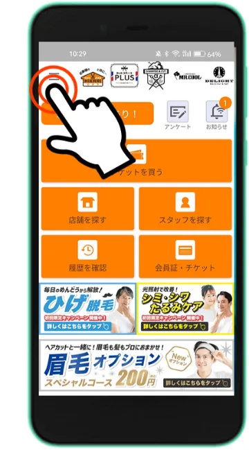
STEP1左上のメニューアイコンを選択
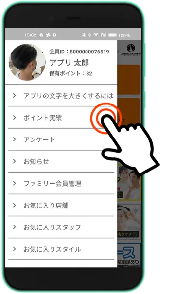
STEP2ポイント実績を選択
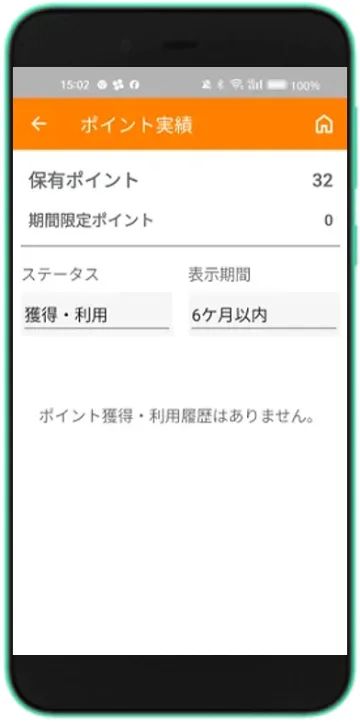
STEP3ポイントの実績や履歴が確認できます
ご予約
日時を指定して予約9ステップ
ヘアスタイルやスタッフの技量によって、時間通りにご案内できない場合もございます。
- STEP1
『カットハウスひかりアプリ』をタッチ
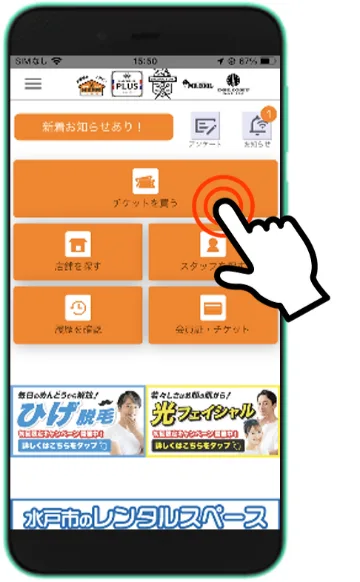
STEP2ホーム画面『チケットを買う』をタッチ
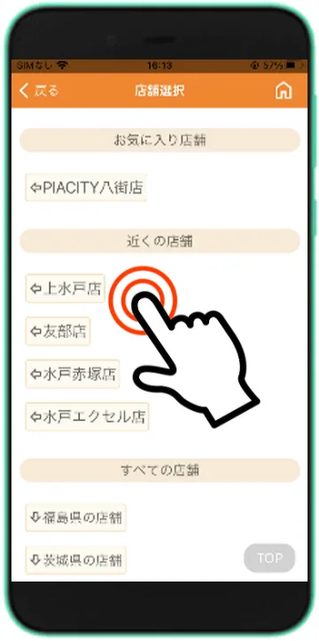
STEP3『店舗名』例:上水戸店をタッチ
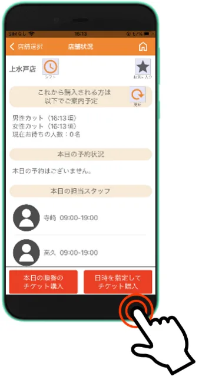
STEP4『日時を指定してチケットを購入』をタッチ
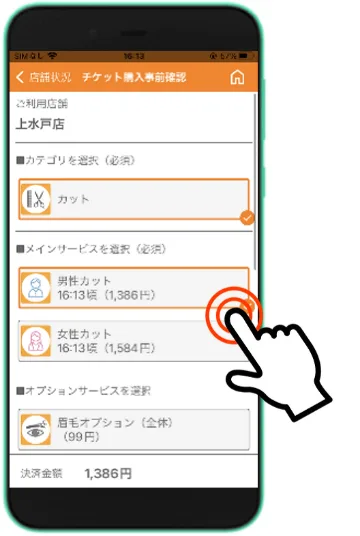
STEP5『ご希望のメニュー』『オプションサービス』をタッチ
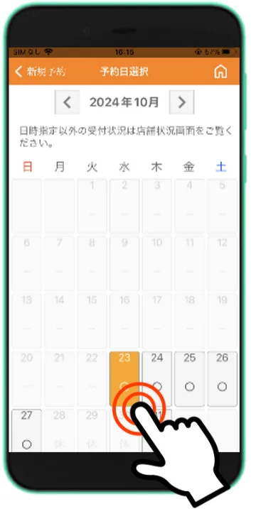
STEP6『ご希望の日にち』をタッチ
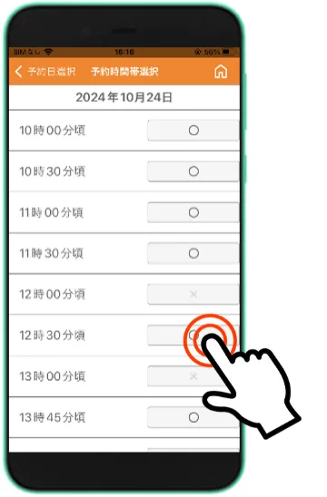
STEP7『ご希望の時間』をタッチ
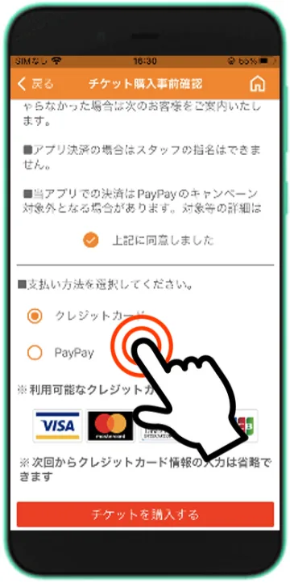
STEP8『PayPay』or 『クレジットカード』をタッチ
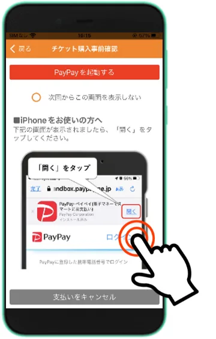
STEP9『PayPay』 iPhoneのお客様は開くをタッチ『クレジットカード』カード情報をご入力
本日の順番で予約10ステップ
お待ちの方が店頭にいない場合はすぐに順番となります。ご来店できる時間にご購入ください。
- STEP1
『カットハウスひかりアプリ』をタッチ
- STEP2
ホーム画面『チケットを買う』をタッチ
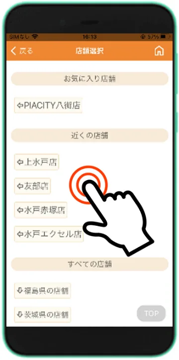
STEP3『店舗名』例:上水戸店をタッチ
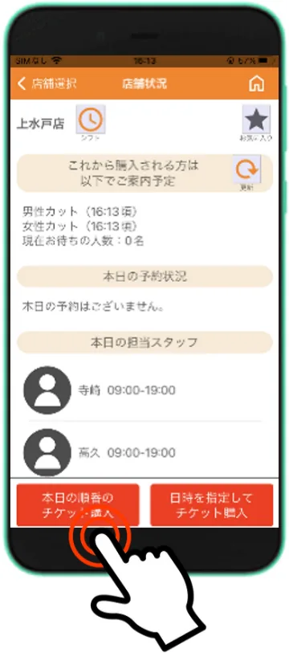
STEP4『本日の順番のチケット購入』をタッチ
- STEP5
『ご希望のメニュー』『オプションサービス』をタッチ
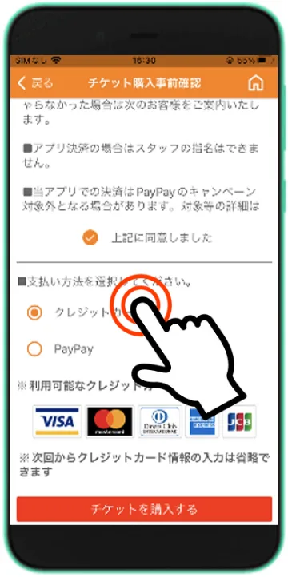
STEP6『クレジットカード』をタッチ
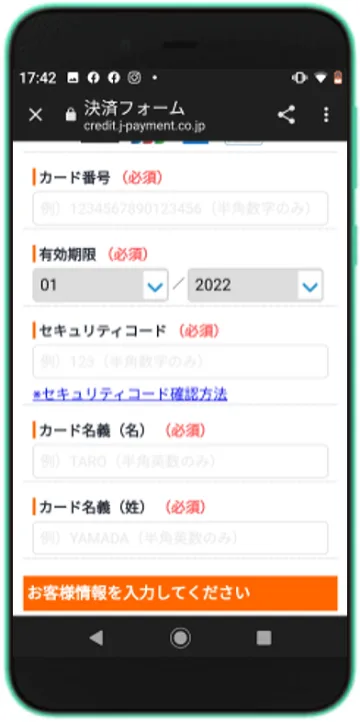
STEP7チケット購入決済に必要な項目を全て入力 / POINT：数字は半角名義はカード記載通りに！（例：HANAKO HIKARI）
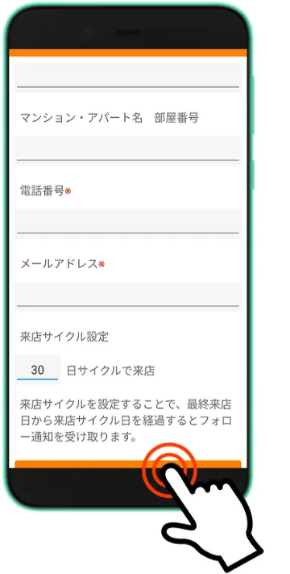
STEP8続いて電話番号・メールアドレスを入力『次へ』をタッチ
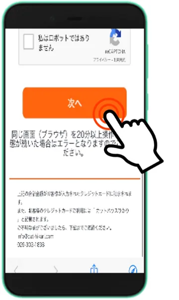
STEP9私はロボットではありませんにチェック『次へ』をタッチ
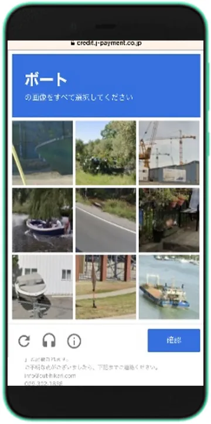
STEP10指示に従って『画像』をタッチ
カット以外のサービス（オプション）の購入2ステップ
短時間でサクッと体験できるサービスをオプションでつけられます。※提供サービスは店舗ごとに異なります。
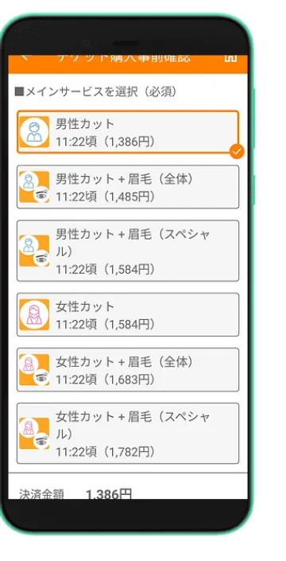
STEP1チケット購入画面でメインサービスを選択
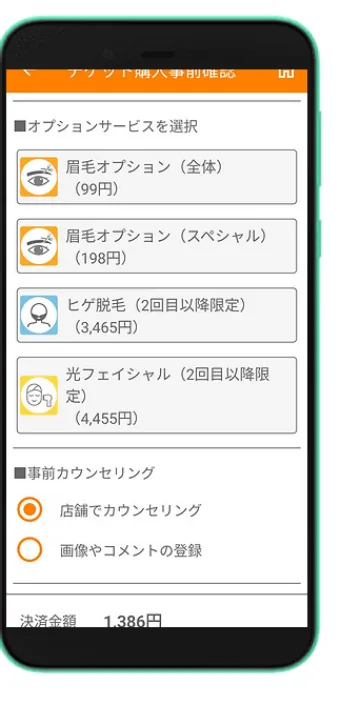
STEP2オプションサービスも購入いただけます
予約のキャンセル3ステップ
アプリ予約後もキャンセルできます。予約時間帯から60分を過ぎてのキャンセルは300円の手数料が発生します。
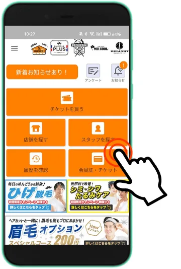
STEP1購入後、『会員証・チケット』を選択
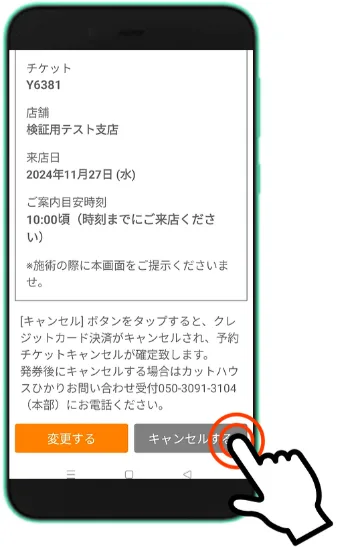
STEP2『キャンセル』を選択
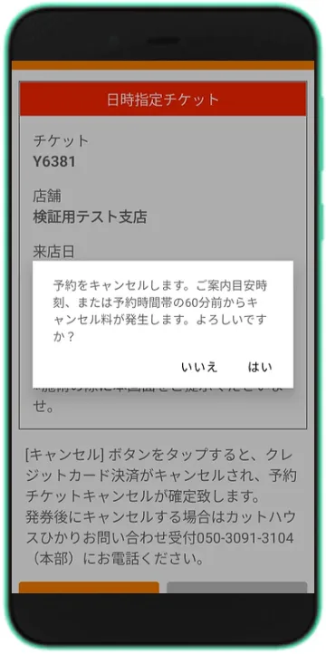
STEP3注意事項を確認後、『はい』を選択（予約時間帯から60分を過ぎてのキャンセルは300円の手数料が発生します）
予約の変更5ステップ
アプリ予約後も内容を変更できます。直前の変更はご希望に添えない場合がございます。予約時間帯から60分を過ぎての変更は300円の手数料が発生します。
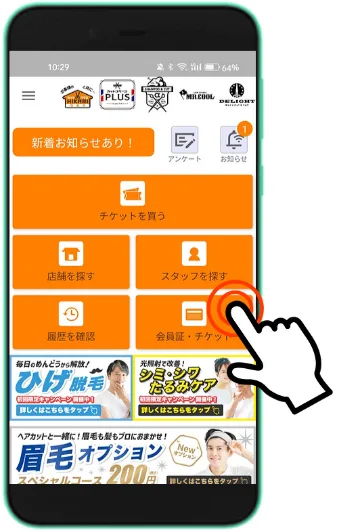
STEP1購入後、会員証・チケットを選択
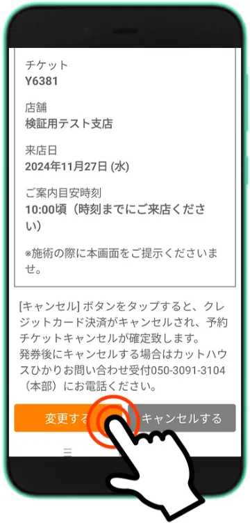
STEP2『変更する』を選択
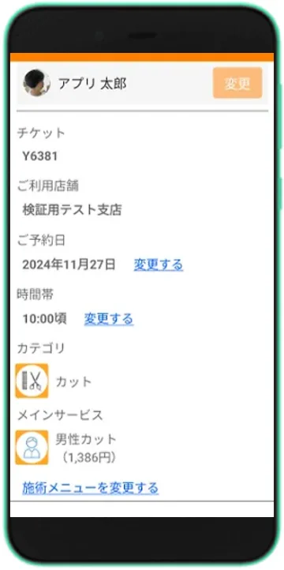
STEP3変更したい部分を変更する
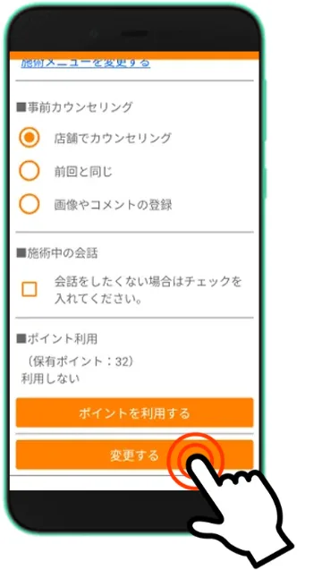
STEP4『変更する』を選択
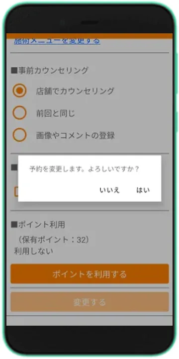
STEP5注意事項を確認後、『はい』を選択（予約時間帯から60分を過ぎての変更は300円の手数料が発生します）
ご利用履歴からチケット購入2ステップ
来店履歴を確認して、そこから予約することもできます。
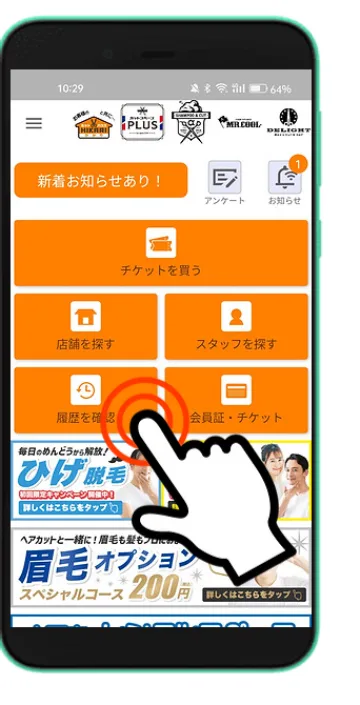
STEP1履歴を確認
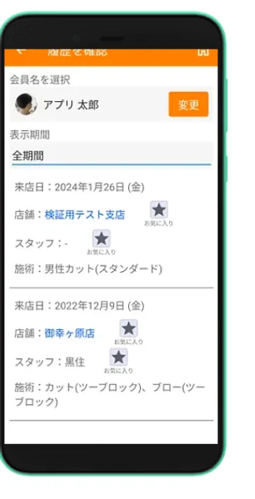
STEP2来店履歴を確認（ここから予約もできます）
事前カウンセリング
事前カウンセリング機能5ステップ
言葉で伝えにくい注文も、画像やコメントを事前に登録できます。
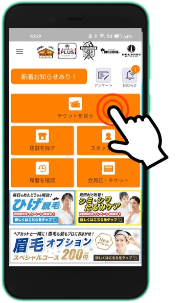
STEP1『チケットを買う』を選択
- STEP2
『店舗』を選択
- STEP3
本日の順番のチケット購入および日時を指定してチケットを購入を選択
- STEP4
画像やコメントの登録。施術中の会話を控えたい場合はチェックを入れてください。
- STEP5
コメントと画像をアップロードできます
カットのご要望の登録方法4ステップ
ご要望を登録しておくと、スムーズにヘアカットができます。
- STEP1
左上のメニューアイコンを選択
- STEP2
カットのご要望を選択
- STEP3
カットのご要望の追加を選択
- STEP4
要望を入力後、登録する
お気に入りスタイルの登録方法5ステップ
ヘアスタイルのイメージを画像で共有して、カウンセリングの手間を省けます。
- STEP1
左上のメニューアイコンを選択
- STEP2
カットのご要望を選択
- STEP3
お気に入りスタイルの追加
- STEP4
カットメニュー画像かスマートフォン内の画像をアップロードできます
- STEP5
こだわりポイントやタイトルも登録ができます
ファミリー会員
ファミリー会員の登録方法4ステップ
- STEP1
左上のメニューアイコンを選択
- STEP2
ファミリー会員管理を選択
- STEP3
ファミリー会員の追加を選択
- STEP4
「新規に追加」もしくは「既存会員を追加」を選択し、情報を入力後、登録する
未登録のご家族は【新規に追加】→情報を入力→【登録する】。すでに会員のご家族は【既存会員を追加】→会員番号（会員カード裏のバーコード下の数字）とパスワード（例：1972年1月1日生まれの場合 19720101）を入力→【登録する】。
ご家族の分を予約する方法3ステップ
お子さまや高齢の方などスマホが苦手な方も、ご家族が代わりに予約できます。
- STEP1
チケット購入画面のご利用会員名の変更を選択
- STEP2
ご家族の名前を選択
- STEP3
ご家族の名前でチケットを購入
お気に入りスタッフ
お気に入りスタッフの登録方法4ステップ
いつものスタッフの勤務予定がわかります。※アプリでのご予約は指名をお受けできません。店頭でアプリ購入いただければ指名を承ります。
- STEP1
スタッフを探すを選択
- STEP2
検索バーにスタッフの名前を入力
- STEP3
★マークを押す
- STEP4
お気に入りスタッフの登録が完了
お気に入りスタッフのシフトの確認方法4ステップ
シフトを確認してからご来店いただけます。※当日変更になる場合がございます。
- STEP1
スタッフを探すを選択
- STEP2
スケジュールを押す
- STEP3
スケジュールを確認（店舗名を押すと予約が可能）
- STEP4
メニューを選び予約する
シフト変更のお知らせ3ステップ
お気に入りスタッフの予定が変わると、アプリに通知が届きます。
- STEP1
お知らせを選択
- STEP2
確認するを選択
- STEP3
変更日を確認できます
お気に入り店舗
店舗名や地域名で店舗を探す方法3ステップ
通いやすい店舗をすぐに検索できます。
- STEP1
店舗を探すを選択
- STEP2
検索バーに店舗名か地域名を入力する
- STEP3
関連する店舗が表示されます
お気に入り店舗の登録方法3ステップ
いつも行く店舗を登録すると、お気に入り欄に追加されます。
- STEP1
店舗を探すを選択
- STEP2
お気に入りの店舗を探す
- STEP3
右上の★マークを押す（お気に入り）
店舗の月間シフトの確認方法4ステップ
お気に入りの店舗のスタッフのシフトが確認できます。
- STEP1
店舗を探すを選択
- STEP2
店舗を選択
- STEP3
シフトを選択
- STEP4
店舗のシフトが確認できます
お支払い
アプリで
クレジットカードPayPay
店頭で
PayPayd払いau PAYメルペイ楽天ペイ
アプリでの決済はクレジットカードかPayPayの2種類です。それ以外は店頭受付のみとなります。
カットスペースPLUS・シャンプーカットアルファは、各種クレジットカード・電子マネーもご利用いただけます。
お知らせ機能
最新情報の受け取り方法3ステップ
最新情報やお得な情報をお届けします。来店後アンケートのご協力で5ポイントプレゼント。
- STEP1
左上のメニューアイコンを選択
- STEP2
通知設定を選択
- STEP3
様々な通知の受け取りをON、OFFできます
カットのタイミングのお知らせ4ステップ
ヘアスタイルを素敵な状態で保つためのお知らせです。
- STEP1
左上のメニューアイコンを選択
- STEP2
会員情報管理を選択
- STEP3
変更を選択
- STEP4
来店サイクル設定で来店したい周期を選択